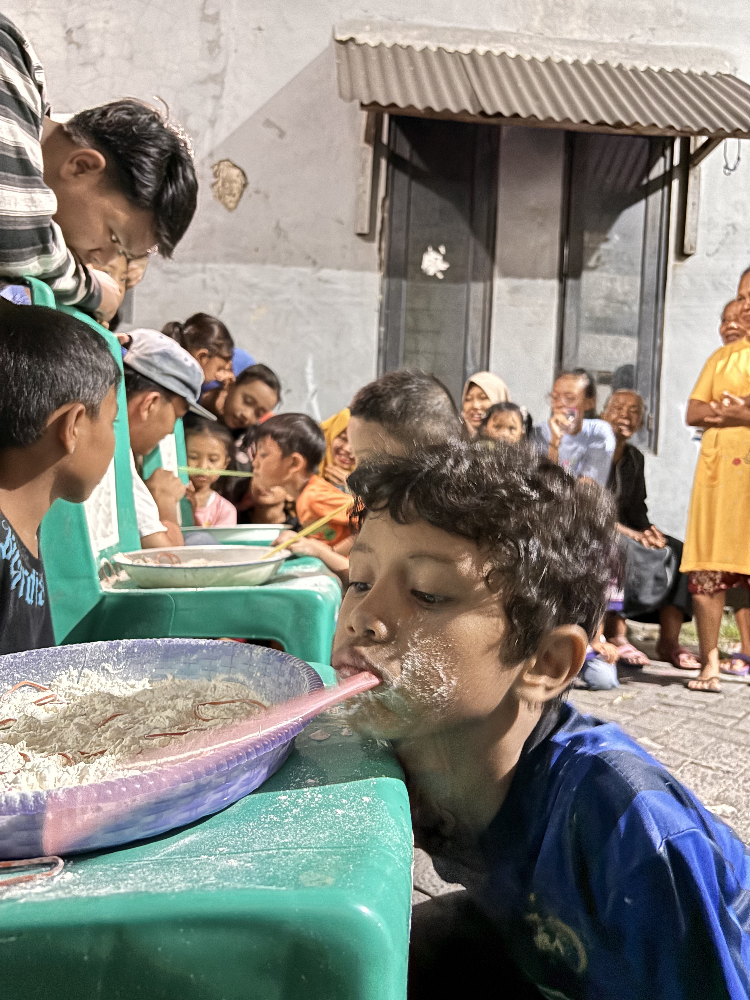

Kabar RT Digital
Kenyamanan Hidup Bertetangga.
Platform digital untuk mendukung kerukunan dan kemudahan layanan warga dalam satu genggaman tangan.

Platform digital untuk mendukung kerukunan dan kemudahan layanan warga dalam satu genggaman tangan.
Akses cepat layanan administrasi dan informasi RT.
Urus dokumen administrasi tanpa perlu menunggu lama.
Laporkan gangguan keamanan atau infrastruktur.
Tetap terhubung dengan perkembangan terbaru di lingkungan kita. Dari pengumuman resmi hingga kegiatan gotong royong.
Pukul 07.30 WIB - Selesai • Area Fasum RT 03
Pukul 19.30 WIB • Balai Warga Utama

RT 03 rutin mengadakan acara setiap bulan Agustus Untuk memperingati Hari...
Baca Selengkapnya ➔
Kegiatan tersebut merupakan Lomba Estafet Tepung untuk kategori...
Baca Selengkapnya ➔Kabar RT lahir dari semangat untuk mendigitalisasi kemasyarakatan. Kami percaya bahwa teknologi harus mempererat hubungan antar manusia, bukan menjauhkannya.
Warga Aktif
Program Tahunan